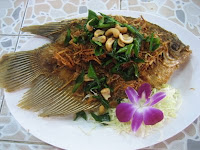

ลูกปลาคั่วเกลือ
เนื่อง จากชีวิตของคนภาคใต้ผูกพันอยู่กับทะเล เมื่ออกทะเลหาอาหารมาได้มากเกินกว่าจะรับประทานให้หมดในหนึ่งมื้อ คนภาคใต้จึงนำอาหารที่ได้จากทะเลมาทำการถนอมอาหารโดยการหมักกับเกลือ หรือตากแห้งเพื่อเก็บไว้รับประทานได้นาน ๆ
ลูกปลาคั่วเกลือเป็นอาหารปลาประเภทหนึ่งที่นิยมรับประทานกันโดยใช้ลูกปลาเล็กปลาน้อยที่หาได้จากทะเล นำมาผสมเครื่องปรุงและคั่วเกลือจนแห้ง ลูกปลาที่นิยมนำมาคั่วคือลูกปลากะตักหรือลูกปลาไส้ตัน
ลูกปลาไส้ตัน 300 กรัม
กระเทียม 10 กรัม
หอมแดง 40 กรัม
ขมิ้นชัน 5 กรัม
เกลือป่น 15 กรัม หรือ 2 ช้อนชา
ตะไคร้ 150 กรัม
1. ล้างปลาให้สะอาด เอาส่วนหัวออก ควักไส้ทิ้ง
2. ทุบตะไคร้ ขมิ้นชัน ทุบหอมแดงและกระเทียม
3. เอาน้ำ ½ ถ้วยใส่กะทะตั้งไฟ พอน้ำเดือดใส่ตะไคร้ หอมแดง กระเทียม ขมิ้นชัน สักครู่จึงใส่เกลือ
4. พอน้ำเดือดใส่ลูกปลา คั่วเบา ๆ จนน้ำแห้งปลาสุก ปิดไฟ ยกลง รับประทาน
หมายเหตุ ลูกปลา หมายถึง ปลาน้ำจืดตัวเล็ก ๆ หรืออาจใช้ปลาไส้ตันก็ได้
ลูกปลาคั่วเกลือ เป็นอาหารที่ให้แคลเซียมสูงมาก จากปลาเล็กปลาน้อยผสมรวมกับเครื่องปรุงก็จะช่วยเพิ่มรสชาติ กระตุ้นให้เจริญอาหารได้ดี